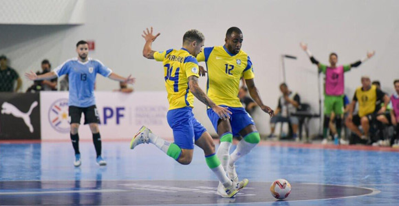
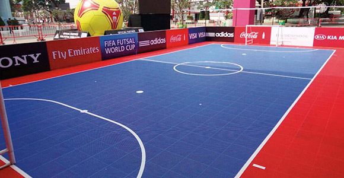
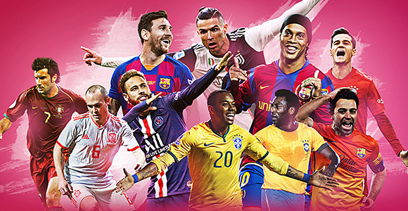

| Начало • Futsal • Speedcubing • Parkour• Teqball • Highdiving • Paintball • Sepak Takraw • Roller Derby • Kiteboarding |
| FutSal | |
За спорта Името идва от португалския futebol de salão. По време на второто световно първенство, проведено в Мадрид през 1985 г., беше използвано испанското име fútbol sala. Световната асоциация по футзал регистрира името футзал през 1985 г. след спор с ФИФА относно името fútbol. Футзалът започва през 1930 г., от Хуан Карлос Сериани, учител в Монтевидео, Уругвай. Първоначално разработен за баскетболни игрища, правилата са публикувани през септември 1933 г |
 |
|  | Правила Футзал, вариант на футбол, който се играе с по-малка топка на по-малко закрито поле, е разработен в Уругвай през 30-те години на миналия век. Спортът е популярен в световен мащаб, особено в Бразилия, Испания и Португалия. Футзалът се играе на твърда настилка като баскетболно игрище, по-малка от футболно игрище и предимно на закрито или твърд корт, маркиран с линии; не се използват стени или дъски. Играе се с по-малка, по-твърда топка с по-нисък отскок от футболната асоциация. Повърхността, топката и правилата благоприятстват контрола на топката и подаването в малки пространства. Играта набляга на контрола, импровизацията, креативността и техниката. |
|
 |
| Видео | |